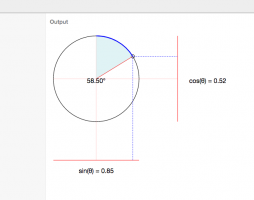
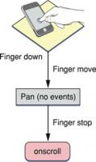

I'm not a full-stack developer - I'm a generalist with the benefit of a lot of experience ;-)
Also on andyshora.com

Tweening Custom Shapes and Paths in …
- 5 years ago
- 8 comments
How to smoothly transition custom shapes and paths in D3.js.
How to add the iPhone Simulator to the …
- 8 years ago
- 1 comment
How to add the iOS/iPhone Simulator to the Launchpad in OSX

The Easy Paper.js Tutorial, building flat …
- 6 years ago
- 7 comments
How to build awesome flat animated shapes with PaperJS
The Problem With Mobile Scroll Events …
- 8 years ago
- 7 comments
Demo showing the problem with mobile scroll events firing on mobile web …

Parallax Tutorial using CSS and jQuery
- 8 years ago
- 14 comments
Andy Shora, Front End Web Developer in London
Sizing Fluid Image Containers with a …
- 8 years ago
- 11 comments
Sizing Fluid Image Containers with a Little CSS Padding Hack
Reasons not to serve responsive web …
- 7 years ago
- 3 comments
A few tips on the problems you'll face when serving responsive web apps …
Unit Testing Best Practices in AngularJS
- 7 years ago
- 54 comments
Unit Testing Best Practices in AngularJS
- Recommend Recommended 83
- Find More Discussions
Discussion Recommended!
Recommending means this is a discussion worth sharing. It gets shared to your followers' Disqus feeds, and gives the creator kudos!
- TweetShare
- Sort by Best

Seus BadAss • 6 years ago see moreFinish off the quote....
Often times better than a master of one.
Bit Planets BadAss • 6 years ago see moreLeonardo Piero da Vinci was an Italian polymath, painter, sculptor, architect, musician, mathematician, engineer, inventor, anatomist, geologist, cartographer, botanist, and writer.
So you are saying Leonardo is master of none? Good joke! IMO who knows more things about related areas is better than who knows only one part.
For example a full stack dev will think better than a front or back end dev. He will take in account much more things when making an important decision.
Adam Wasserman c05m0 • 5 years ago • edited see moreI have to disagree. As someone who was developing in 1984, my feeling is there was just as much to know back then as there is today; it was simply lower level is all.
These days I would consider a well-rounded developer someone who has (amongst many other criteria) worked with both Javascript and Cx/Java, who has an awareness of the relative strengths and weaknesses of frameworks (Angular vs. Meteor for example).
Back then it would have been someone who knew how to profile their code and then optimize inner loops in assembly, someone who knew what the A5 register did on a Motorola 68k in MacOS, and how to use it, someone who knew how to XOR instead of a using a buffer update.
When the items in the stack were fewer and more primative, we had to go deeper, and the information was a lot harder to come by then these days when all you have to do is fire up a web browser.
No matter what you call it, there has always been a need for programmers that have an end-to-end awareness of their craft, from the business needs through to what shows up on a screen, and everything in-between.
This type of programmer has always been a rare beast because of the breadth and depth of knowledge required to do a good job. The focus has shifted from machine language to frameworks, but it is no more or less demanding than it ever was.
Elijah Robison Adam Wasserman • 5 years ago see more..your response is particularly interesting when read backwards (last paragraph first, first paragraph last).
Adam Wasserman Elijah Robison • 5 years ago see moreHaha, a palindrome of sorts! Is this something you do regularly? Are you big-endian?
de_it Adam Wasserman • 4 years ago see moreI used XOR ax, ax to clean up the register in Assembly code in Turbo Pascal.
Jon Smith Adam Wasserman • 4 years ago see moreI agree - fundamental difference being skills in demand.
But my understanding the end-to-end responsibilities lie with distributed responsibilities - a thing called an "analyst" who works with the business owners and factors all considerations into requirements. Software is (should be?) crafted along guidelines of an architect who uses the requirements. The implementers have a skill set that is used to craft code.
The lines between responsibilities has blurred to the extent where many use developers for all three areas of responsibility.
aledalgrande Bit Planets • 6 years ago see moreAre you saying everybody is a Leonardo? Coming from Italy, I can tell you it's not the reality...
Don't think who has a wider view always takes better decisions, they might not have the full picture because of lack of insight in some areas that only specialists have.
Bit Planets aledalgrande • 6 years ago • edited see more> Coming from Italy, I can tell you it's not the reality
How that? I don't see what you can know more than another person. With the exception if you really talked to him.
I'm from Italy too, so I can't see any new insight just for being from there!>Don't think who has a wider view always takes better decisions
Maybe not but most of the time yes.
>they might not have the full picture because of lack of insight in some areas that only specialists have.
The same can happen for specialists. They might have a lack of insight in the global project.
I can give you a quick example:
You need to increase the performance of your website. If dev A only knows about optimization he might make some mistakes that will break some other part of the site, he doesn't even know that part even exists. If dev B has a wider knowledge he might know that doing X might break Y. The probability to make better job is for dev B, at least in my opinion.
aledalgrande Bit Planets • 6 years ago see moreI'll give you my view (and I tend to consider myself more full-stack than average, so not bringing any "specialist" bias):
If you need to optimize a website with 10000 users, your example is true. But on a site at the level of Facebook or Twitter or anything that has decent traffic, you either are a specialist, or you have nothing to add. You could know about all of the trenches, from nginx to the shadow DOM in Chrome, but you will have to specialize if you really want to kick ass.
So it depends on the situation what kind of guy you need. Go with your guts, not with the rules.
That's my point. Doing an example with Leonardo is like saying that every product manager can be Steve Jobs. Sorry, but if you think that, you're not on the right path buddy...
Polarnj aledalgrande • 6 years ago see morefront end development isn't that much of a mystery to someone who spent endless hours studying the full spectrum. You can be skilled with node and just as skilled with css and svg animations. this is all nonsense unless we had a specific person to analyze
Martin Polarnj • 5 years ago see moreReading your comments: javascript, node, css and svg animations… you’re a front-ender, aren’t you? ;)
chriscortez Bit Planets • 6 years ago see more"a full stack dev will think better than a front or back end dev"
This is reductive and explicitly untrue. It suggests that generalized thought is inherently more valuable than specialized thought. I could provide infinite examples to the contrary in the real world.
Polarnj chriscortez • 6 years ago see moreno it doesn't. your attacking his comment without taking in his point. Which i would say is that a full-stack developer, a specialist in web app development, not a half-assed generalist, can see the entire project from a bird's eye view that just isn't possible for the more narrow specialists on either side or in design etc. Also, using node and express with angularjs is not as difficult and general as you think. it's all javascript and it's likely to have a very solid architecture when designed by one who see the forest. So if the full stack is truly at the same skill level as a front or back end dev, he is certainly better in every way and probably grasps concepts in the project workflow with ease due to the perspective he has, while the others trip over each other often since angular makes no sense to a ruby dev or vice versa.
Martin Polarnj • 5 years ago see moreBeing a full-stacker, I just have to ask: what does a project manager do in your scenario?
William_D99 Martin • 5 years ago see moreClearly someone didn't read the article ... particularly the part about "full-stack" being a myth.
Joseph Rex chriscortez • 6 years ago • edited see more"a full stack dev will think better than a front or back end dev"
I agree with that as a full-stack developer will consider back-end consequences of some front-end stunts. A mere front-end developer wouldn'tSoulFireMage chriscortez • 5 years ago see moreAgreed. A brain surgeon definitely does brain surgery better than the best GP.
Prashant Chaudhary SoulFireMage • 5 years ago see moreBut a general Physician tends to understand a basic symptom in your body more easily than a specialist. Once you have a more specific symptom then you are better off with an specialist. And If you don't have a general physician then you will just keep on running among the specialists to find whether the headache required a surgery or it was just a Gas trouble :) . Think broadly when you reply.
TheFedaykin Prashant Chaudhary • 3 years ago see moreHmm I kind of disagree with this analogy in terms of programming though.
One of the goals of being in any profession is to be financially successful to at least support yourself and your family and the other is to have a rewarding line of work that allows you to feel like you understand what you do and to be able to help others learn and understand as well. To achieve the goal of being financially successful one road to take is to specialize in a certain stack or technology ( i.e SalesForce, Web Developer, SharePoint, etc ).
Think about it, if your dishwasher is broken and you didn't know anything about dishwashers, would you hire a dishwasher repairman or a general repairman? Unless you know the general repairman personally and you know that he's good with dishwashers, you'll probably hire the dishwasher repairman.
Polarnj SoulFireMage • 5 years ago see moreBut this isnt brain surgery. Server side coding today is hardly even enough work to keep anyone busy long. Client side code has gotten out of control and often deals with restful apis and data binding doing most of the real time biz logic and then the responsove ui design or at least prototype, the templating, animation, light security, messy module architecture, etc...if anything we need to go with isomorphic js when possible and make a position that handles server and client side development and another to do the visual front end code work. It seems like the coding language isnt the best way to look at the work categories but instead go with the concepts. Even routing in an SPA seems the closest thing connected to UI animation for example, and the html forms and rest api's or json files or some db-ish concept are also most closely linked but i couldnt say how we could best restructure this process. Unless everyone was full stack capable and just moved around project to project in varying strucural roles. But it doesnt seem like front and back are the logical fault lines anymore. I dunno if im going anywhere with this, but point is the status quo seems outdated and our thinking a little jumbled and lacking in conceptual clarity. Or maybe its just me? Lol
SoulFireMage Olusegun Akinyelure • 4 years ago see moreThis would be an incomplete argument: how so? A specialist tends to do a better job on a specialised task than a generalist. This is my premise. Yours?
TheFedaykin SoulFireMage • 3 years ago see moreWhat you said makes two points at once. The first being that you need to know why you're a programmer in the first place.
Is it because you enjoy programming as your hobby and you would do it for free given the chance? Is it because you want to have a rewarding profession where at some point you can teach and be a mentor to others? If you sided with the first point of view, then you should continue to be a generalist since this kind of work will probably stimulate you and keep you going for years at a time. However, if you're siding with my second point, then you really should take a look at being a specialist in a certain stack or framework. It might take you to the top of the field and put you in the company of a small group of your peers. It could even be what allows you to work for a big tech company like Microsoft or google which will be rewarding for a long time both financially and professionally.SoulFireMage TheFedaykin • 3 years ago see moreAfter nearly 2 years doing it commercially since this commentary I've come to a few conclusions.
I'm less patient with UI complications - we use Winforms - than most anything else. Whereas I can spend quite a long time working out either data analysis or code generation for middleware stuff: dB repository code, business workflows and rules and so on.
In my own time, when I study I'm going down machine learning routes.
The one part I do enjoy whilst I'm more generalist is working directly with clients so I'm not really a back office back end coder which may be an odd mix. :)
Ryan chriscortez • 4 years ago see moreOr you can be a generalist who specialized on top of that.
That said, I think this discussion if partially off-base. The real gap isn't what levels of the stack you are comfortable with, it's often whether a developer is just a developer or is additionally a computer scientist. The latter is far more important than being a "8" instead of a "5" in CSS.
Olusegun Akinyelure Ryan • 4 years ago see moreBrain surgery needs a different perspective from mere dentistry. Programming is about logic not, not programming language. If you understand the logic behind various technology, I see no reason to settle for one. Specialization in software is another word for laziness. A developer wouldn't sit on a language or framework for more than a year
JP Ventura Bit Planets • 4 years ago see moreIt was possible to Da Vinci mastering all that at his time due the volume of information.
According to Forbes https://goo.gl/hK4DqX, in 1961 Derek Price published "Science Since Babylon" and defined Law of Exponential Increase", explaining that “each [scientific] advance generates a new series of advances at a reasonably constant birth rate, so that the number of births is strictly proportional to the size of the population of discoveries at any given time."
So, if in 1997 there was 9.2TB of published text in the world, in 1519 it would be less than 10KB.
treybe Bit Planets • 5 years ago see morecompanies want someone that can cook a full course meal and not just a burger flipper. I have worked on many projects for multiple companies, alone for the most part, using whatever the company required albeit VBA, VB.Net, C#, HTML, SQL, Javascript, SSRS and anything else that may not be the most wonderful techonology. (completely self-taught in all technologies that I have used.) I have been paid well because I know and understand how to develop and what the company needs.
It boils down to providing the user with what they need utilizing the tools that are available, generally tools that the company feels comfortable with using.
Dynamico Designs treybe • 4 years ago see moreFor me, the sad part is the misuse of the term 'Full-Stack Developer' by those whom don't understand it. Small businesses and individuals who believe they are seeking one, yet aren't. The mistake is they don't understand the technical standards their particular business should or would need, and just resort to whatever 'fluff-word' (like 'FSD') to seek developers. This is both detrimental to the developer as well as the business/individual. I know of some companies where the technical documentation/structure are messy because they've hired different developers previously over and over that they now have a hodge-podge of a mess; I sometimes wonder how they get by. I am very straight-forward when I let them know what I'm able to do (I consider myself as close to a FSD, but am very aware of my weaknesses, so I don't use the term). I'm thinking that the author here is spot-on on people's use of it. I like your point: people only need what you can make from the tools you can provide with the budget they have for said project(s). Peace!
Harold Bit Planets • 5 years ago see moreHow many Da Vinci s Do you know of? So is the case with full stack developers.
Jacob's Trouble Bit Planets • 3 years ago • edited see moreSo you are saying Full stack programmers are as common as Leonardo Piero da Vinci?
Full stack programmers are as rare as Leonardo Piero da Vinci. The equivalent of a full stack programmer in the medical profession will be like a Neurologist with expertise in Cardiology who can also function as a plastic surgeon and as a radiologist if need be. Back in the world of programming, the corporations looking for full stack programmers end up recruiting snake oil salesmen.
Gerardo Diaz Bit Planets • 4 years ago see moreI understood he was saying there was only one Leonardo :)
feeji Bit Planets • 6 years ago see moreThe key thing to take away from this is "more things about related areas" which makes you a master at a higher abstract of those combined areas, and therefore more of a philosopher or scientist depending on the nature of how you can apply your knowledge.
Ask yourself: first what do you know can be done, second do you also know how to go about doing it, third can you demonstrate it, and finally, how deep can you explain what is going on with the underlying areas of this higher level abstraction?
It's ok to be a jack of all trades, but unfortunately people that hire are often not as knowledgable as those who accumulate knowledge in surrounding areas of a specific specialty, and seek to filter out candidates who believe to be able to reach some (often nonsensical but other times attainable) criteria.
I'm glad you can see where you can specialize. As a front end or back end developer I think those are 2 abstractions worth aspiring towards, and don't deny that there is certainly crossover between the two diciplines. I'd like to see more mentorship opportunities that would help separate would-be-full-stack-developers into one of these two areas as I think it would really show where personal interests lie, and finding others to work with, collaborate with, and generate innovative projects would be a process of seeking your other half instead of a self-proclaimed "know-it-all" who may not even meet the requirements of a recruiter (and thus further skew the expectation of what a "full stack" developer even is).Ali Abbas Bit Planets • 6 years ago see moreYou know da Vinci as a painter or anything else. On side note he was never inventor, he painted something that at later stage thought is similar to the Airplane design.
Leonard_now Ali Abbas • 6 years ago see moreDa Vinci actually was an inventor having invented tank like structures for the king at that time. he also developed other devices that have been cataloged at various museums. how on earth can you say he was not an inventor?
I am comfortable working on the back end or the front end and in either roll I am always concerned about issues with the other. when I received my CIW certification 20 + years ago no one asked about front end or back end it was more of a concern of can you do it. and with the resources available you either could or couldn't. now their are many more resources. I don't know them all but I am always willing to learn more about the field I work in. but at what cost to me. If I need to learn .net I will learn .net just as I have learned Perl,PHP, CSS, JavaScript, HTML etc. what gets me like the writer of the article above is why the separation and then the recombination that amounts to full stack developer. the last five years I have been looking for a better job and can't get interviews because I can't find jobs that match my specific criteria its very frustrating and in the mean time I'm stuck in a full stack job that I'm miserable in because hours fluctuate extremely and most of the time the boss wants me to just use the simplest of remedies that doesn't fix anything. I also walked into his operation after it had been poorly constructed by someone else. he also requires modifications to everything when his systems aren't built for the type of mods he requests. so I go into the back end to facilitate the back end capability and then do the front end mod as requested. in fact just last week I modified his store so it now has sup to 6 SKU's for sales and his 4 primary product don't show the final price until your in the detail page which makes no sense to me because if the search engines pick up the page and publish he will end up in trouble for under cutting other distributors. and if he wants me to no-follow those pages that also needs to be built into the system which is not designed for it. yes it could be done fairly easily but I haven't done the research to confirm it wouldn't break anything in the process and getting information from him takes way to long to begin with. enough run on sentences. great article. Oh and I'm also a licensed state approved automotive inspector. .
Stephen Johnston BadAss • 4 years ago see moreThe full saying is: A jack of all trades is a master of none, but oftentimes better than a master of one.
Leonard_now BadAss • 6 years ago see moreThat's exactly what I am, I just want to know how I can turn it into a job that pays well enough to not be worrying about paying my bills all the time. great piece by the way. I for one can really appreciate it.
Pedro Duarte • 7 years ago • edited see moreYep. That pretty much covers it. I think it's clear to say that no one really is a full-stack developer.
Hopefully one day we will all know the difference between "getting it done" and "doing it right"eblinick Pedro Duarte • 6 years ago see moreMany years ago, I worked with a developer who wrote more or less perfect code. It took him 3 times as long to work on his projects. He was let go. Unless you work on a space shuttle most companies can live with bugs (Microsoft included), but value time. There are always trade-offs and time usually wins (unless you are a big bank with very limited competition). Actually that is something Edward Yourdan also said in his book Byte Wars (WBT in 2001)
Leonard_now eblinick • 6 years ago • edited see morethree decades ago IBM paid it's programmers by the page. when they bought lotus AMI pro they put a lot of junk in it that was not needed. That's when I started programming. I couldn't see the sense of an application requiring so much to do so little and its programming language for scripting had flaws all over the place.